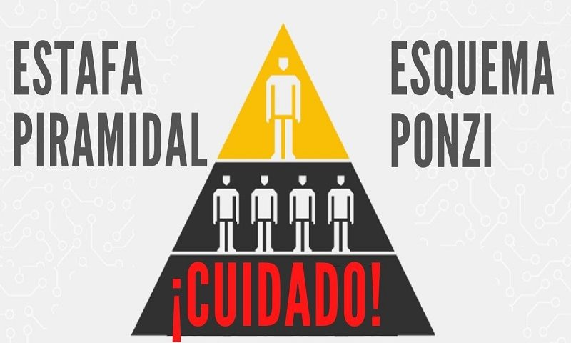
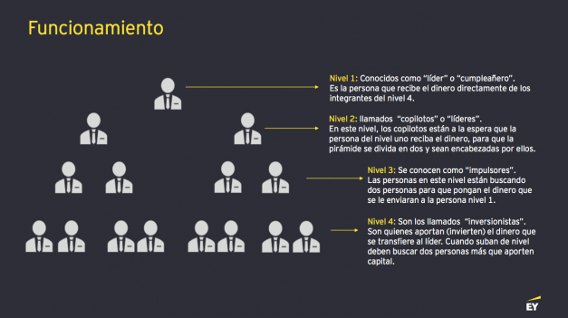

Qué son las estafas piramidales
Una estafa piramidal es un esquema de negocios que se presenta como una oportunidad para obtener un gran retorno económico y que consiste en conformar una red basada en la confianza en la cual los nuevos participantes que ingresan, ilusionados con la idea de formar parte de un atractivo modelo de negocios, lo que deben hacer es invertir dinero y captar nuevos inversionistas que quieran formar parte de esta red.
Con el dinero que ingresa de los nuevos participantes se paga a los inversores más antiguos. Es decir que las ganancias que obtienen los participantes proviene del dinero de nuevos inversionistas, no de una inversión legítima o de la venta de un producto.
Cuál es la diferencia con el esquema Ponzi
A menudo se confunde con otro esquema fraudulento: el esquema Ponzi. Se trata de un modelo piramidal muy similar pero con alguna diferencia, ya que en el esquema Ponzi las personas invierten dinero en algo, mientras que el esquema piramidal ofrece la oportunidad de obtener dinero a partir de reclutar a nuevos miembros.
Sin embargo, en ambos modelos llega un momento en que la red crece demasiado y es difícil captar nuevos inversionistas, entonces llega un punto en el que las personas cuando quieren retirar el dinero no pueden y los creadores de la red desaparecen.
Cómo funcionan las estafas piramidales.
Si bien estos modelos de estafa existen desde hace al menos un siglo, se han adaptado a la tecnología. No solo porque pueden difundirse rápidamente, sino porque también pueden presentarse como una app de inversión que promete un buen retorno.
En una estafa piramidal las “empresas” no invierten realmente el dinero de los participantes, solo se dedican a distribuir el capital de los nuevos inversionistas desde la parte superior de la pirámide; es decir, los primeros inversores y los que siguen en orden de antigüedad. Inicialmente el esquema parece funcionar porque al principio la red es pequeña y eso hace que el número de nuevos inversionistas sea mayor que el número de viejos. Por lo tanto, con el dinero de muchos nuevos participantes es posible que los pocos que están arriba en la pirámide puedan recuperar el dinero invertido y obtener los intereses estipulados.
Sin embargo, a medida que la red crece se vuelve cada vez más difícil engañar a nuevas personas y esto genera un desequilibrio, que resulta en que el número de nuevos inversores sea menor al número de participantes que tienen que empezar a obtener ganancias. Aquí es cuando las personas que iniciaron el negocio suelen desaparecer con todo el dinero que puedan y ya nadie más podrá cobrar.

Si bien este tipo de fraudes son menos frecuentes que en otra época debido a que las autoridades regulatorias del mercado están muy pendientes del nacimiento de este tipo de esquemas, no en todos los lugares del mundo está prohibida su puesta en marcha ya que existen legislaciones diferentes para cada región.
Estafas piramidales actuales
Ejemplos recientes de estafas piramidales en América Latina existen varios. El caso de Single Grain en Chile en 2022, por ejemplo. Esta estafa piramidal consistía en una app en la cual las personas debían invertir dinero e invitar a otros a participar. La aplicación ofrecía una gran rentabilidad, por lo que era muy atractiva. Sin embargo, resultó ser un fraude millonario. Otro ejemplo, también en Chile, fue el caso de KnightsBridge, un esquema piramidal que recibió al menos 5000 denuncias y que generó perdidas que rondan los 5 mil millones de pesos chilenos. En Argentina, el creador de Generación Zoe está en prisión acusado por llevar adelante una estafa piramidal mientras la justicia investiga centenares de denuncias.
Es importante mencionar también que el auge de las criptomonedas y la falta de regulación asociada a los criptoactivos en general hace que este tipo de esquemas fraudulentos prospere en este ecosistema, por lo que es importante que las personas estén atentas ante cualquier propuesta de inversión demasiado buena para ser verdad. En 2022 fueron acusadas 11 personas por su rol en la creación de un esquema piramidal y Ponzi llamado Forsage, el cual simulaba ser una plataforma descentralizada de contratos inteligentes. Este fraude reclutaba a participantes para que depositen sus criptoactivos y recaudó más de 300 millones de inversionistas.
¿Cómo detectar una estafa de este tipo?
Si bien como ya mencionamos este tipo de esquemas fraudulentos existen desde la antigüedad y pueden ser predecibles para alguien experimentado en el mundo de las finanzas, las personas menos familiarizadas con los negocios pueden caer fácilmente en la trampa. Por eso, repasamos algunos puntos que nos pueden advertir la presencia de una posible estafa de estas características:
Por último, estos esquemas fraudulentos no se deterioran progresivamente. El sistema comienza a funcionar hasta que un día los creadores de la burbuja desaparecen y el sistema deja de funcionar. Esto lógicamente hace que sea difícil
de predecir.

Conclusión
Los estafadores siempre han buscado atraer a inversores poco experimentados a estos esquemas y actualmente están intentando aprovechar también el interés por las criptomonedas. En Argentina, por ejemplo, está bajo sospecha por la Justicia un proyecto llamado Vayo Coin que era promocionado por celebridades. Se han registrado denuncias en contra de este proyecto de inversión que prometía una alta rentabilidad pero que dejó de responder ante los reclamos de los y las clientes. Este caso es un buen ejemplo para tomar conciencia de lo difícil que puede llegar a ser para los que no están en el tema si es un fraude o una empresa legítima. Observar que incluso pueden utilizar la imagen de personas públicas para convencer a las personas refuerza la importancia de mantenerse informado, alerta y desconfiar cuando los beneficios son demasiado buenos.
Fuentes.
https://www.welivesecurity.com/la-es/2022/09/21/estafas-piramidales-como-funcionan-como-reconocerlas/
https://economistacolombia.com/economia/estafas-piramidales-5-consejos-para-evitar-caer-en-ellas/
https://diario.elmundo.sv/Economía/4-senales-para-detectar-una-estafa-piramidal